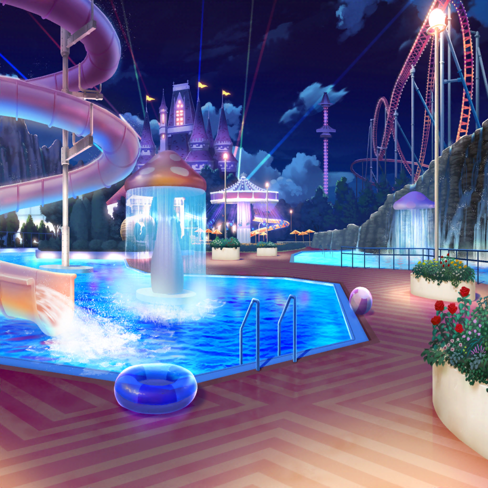

夜
トコナッツパーク レストラン
あこ
ん〜〜〜！
この海老フライ、サックサクですっごく美味し〜〜〜い！！
燐子
こっちのグラタンも……とっても美味しいよ……
リサ
晩ごはんを紗夜おすすめの
シーフードレストランにして大正解だったね♪
紗夜
気に入ってもらえたなら、調べて良かったわ。
でも、少し注文しすぎじゃないかしら……？
リサ
あはは、美味しそうな料理ばっかりだったから、
いろいろ頼んじゃったね
友希那
このタコのトマト煮……美味しいわ。
あこ、食べてみて
あこ
はーい！ もぐもぐ……んんっ、これは！
友希那
どう？ 美味しい？
あこ
なんていうか、タコ……じゃなくって！
海の魔物が封印の力を解放して、その……
ババーンっと闇の力がみなぎるって感じですねっ！
友希那
……真面目に答えて
あこ
ええっ！？ えーと、すごく美味しいです……
友希那
そう、それなら良かったわ
友希那
……ん。このムール貝も美味しいわ。
紗夜、ポテトばかり食べていないでこれも食べてみて
紗夜
！ ポテトばかり食べてません！
紗夜
あの、どうしてさっきから
自分の食べたものを人にすすめているんです？
しきりに感想も聞いてますけど……？
燐子
友希那さん……今日はよく感想を聞いてますよね……？
アトラクションに乗ったあと……
みんなに感想を聞いてましたし……
友希那
聞かないとどんな気持ちなのかわからないじゃない
リサ
そんなことないと思うけどなー。
顔を見れば、どんな気持ちか大体わかるんじゃない？
友希那
それだけじゃわからないわ。
わかった気になって、間違えたくないもの
友希那
リサだって、ウォータースライダーをあんなに
怖がっていたのにまた乗りに行ったじゃない
友希那
好きなのか苦手なのか、見ているだけじゃよくわからないわ
紗夜
そういえば、スライダーが空いている時に
宇田川さんと一緒に乗りに行っていたわね
リサ
あー、それはほら、一度乗ってどんなコースかわかったら
２回目は楽しめるかと思ってさー
リサ
それに、怖い思いだけして終わっちゃうのも悔しいし！
絶対リベンジしなきゃって思ったんだよー
燐子
それで……楽しめたんですか……
リサ
うん、ばっちり☆
１回目はいきなりなことが多すぎて、
ビックリしたけど２回目はいい感じに楽しめたよ！
燐子
あんなに怖いのを楽しめるなんて……尊敬します……
あこ
それにしても、今日はホントスムーズに見て回れましたねっ！
あこ
あこ、トコナッツパークは何度か来たことあるんですけど、
行列に並ばないで回れたの初めてですっ！
あこ
パークを楽しく回る作戦、
考えてくれてありがとうございますっ、紗夜さん！
紗夜
いえ、私は別に……
友希那
パークの中は大体回れたし、
食事が済んだら帰る支度をしましょうか
リサ
えっ！？ いやいや、まだ帰るには早いってば！
あこ
も〜！ まだトコナッツパークの
メインイベントが終わってないですよ〜！
友希那
まだ何かあるの？
あこ
ショーですよ、ショー！
パークの真ん中の湖でショーがあるって言ったじゃないですか！
友希那
ああ、そういえば……
紗夜
人気のショーと聞いているので、
もちろん予定に組み込んであります
燐子
夜の水上ショー……
きっと素敵なステージになるんでしょうね……
リサ
というわけだから、ショーを見てから帰ろ☆
友希那
それでいいわ。どんなショーなのか楽しみね